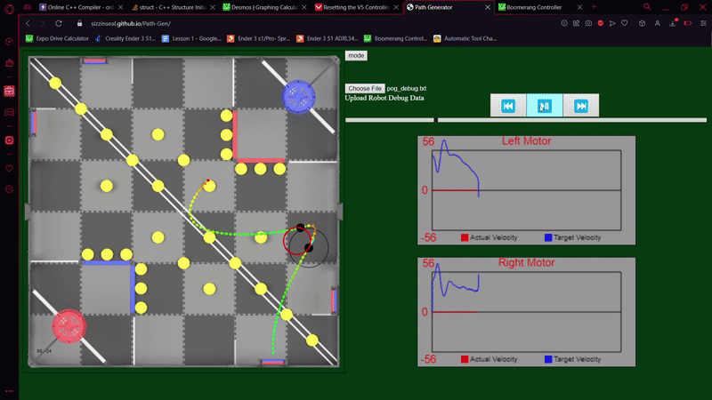

|
LemLib
0.4.9
An easy to use and feature-rich PROS template
|
|
LemLib
0.4.9
An easy to use and feature-rich PROS template
|
In this tutorial, we will be be using Pure Pursuit. Pure Pursuit is a path following algorithm that allows the robot to follow a path quickly.
Pure Pursuit is a path following algorithm that allows the robot to follow a path quickly. It works by drawing an imaginary circle around the robot, and then finding the intersection of the circle and the path. The robot will then drive towards the intersection. This is shown in the GIF below:

Tuning Pure Pursuit is very simple. If you want the robot to follow the path more closely, decrease the lookahead distance. If you want the robot to follow the path more loosely, but faster, then increase the lookahead distance. A good starting point is 10 inches, but this will vary depending on each motion.
We have developed a Path Planner so you can quickly and easily generate paths for your robot to follow. You can find it here. Just like LemLib, it is entirely open source, so you can see how it works and even contribute to it.
Using the Path Generator is simple:
Another feature of the Path Generator is the ability to make the robot go faster or slower at certain points. The planner will automatically slow down the robot around sharp corners and decelerate as it approaches the end of the path. You can modify the speed of the robot at certain sections by highlighting the section (right click drag) and then changing the speed in the textbox that will appear. The units of the checkbox are a percentage. Editing the path will reset any user defined speeds. Below is an example of a path with a user defined speed:

As you may have noticed, there are some sliders on the right. Unfortunately, the GIF shown is of a slightly older version of the Path Planner, and some sliders have been removed. Now, the only sliders on the Path Planner are the max speed, max deceleration, and turn speed multiplier. Max speed and max deceleration do exactly what you would expect. The turn speed multiplier determines how fast the robot will move around sharp corners. Higher values will make the robot move faster around corners, and lower values will make the robot move slower around corners.
The Path Generator saves paths as .txt files. You can obtain the file by clicking the "Download Path" button. The file will be saved to your downloads folder. You can upload this file to the Path Generator later on and it will load the path again.
In order for the robot to read the file, we need to put it on a micro SD card. Simply drag the file onto the SD card and it will be copied over. You can then insert the SD card into the robot and it will be able to read the file.
Almost there! Now we just need to tell the robot to follow the path. We can do this through the lemlib::Chassis::follow function. Below is an example of how to use it:
In the above example, the robot reads the path in "path.txt", has a timeout of 2000 milliseconds, and a lookahead distance of 15 inches. After it finishes following the path, it will read the path in "path2.txt" and follow it. The robot will be going backwards this time, so the last parameter is set to true.
Thats it for the tutorials! I hope they were helpful. If you have any questions, feel free to ask me on Discord (SizzlinSeal#8682). You can also open issues and pull requests on the repos.